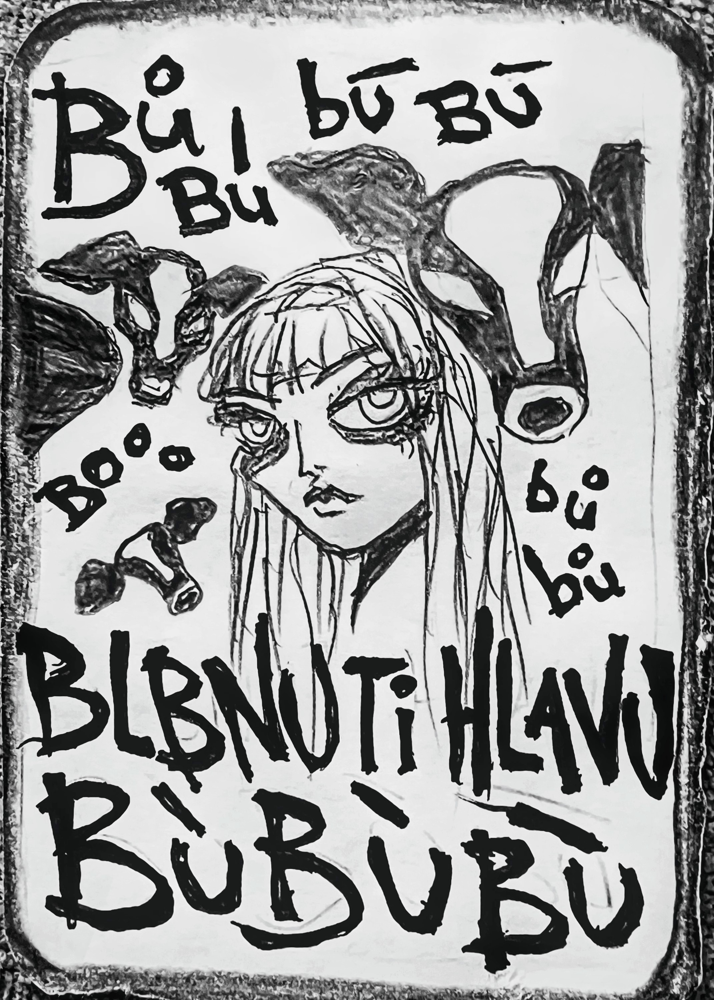

Zapsáno rukou, která nechtěla nic vysvětlit.
O KRÁVÁCH
které blbnou hlavy
—
Na konci louky, kde tráva rostla jako z vody a plot byl jen nedotažený nápad, žilo stádo krav.
—
Ale ne jen tak nějakých. Tyhle krávy mluvily. Ne bučely. Mluvily. Jako krávy. Ne Bubáci. Ale neříkaly nic užitečného.
—
Říkaly: „Bu bu bu, blbnu ti hlavu, bu bu.“
—
A to nebyla hrozba. To byla metoda.
—
Krávy se totiž bez plotu nudily, chyběly jim mantinely. A tak se rozhodly, že je realita strašně pevná. Ne jen pro ně – pro všechny. Že věty jsou hrozně rovné. Že výrazy se tváří, jako by byly jediné.
—
A tak se rozhodly: Zamlžíme jazyk. Zkomolíme smysl. Zblbneme hlavy.
—
Každé ráno vstaly, přežvykovaly slovní druhy a pak se vydaly do vesnice. Tam si stouply na náves a začaly: „Bu bu bu, blbnu ti hlavu, bu bu.“
—
Lidé se nejdřív smáli. Pak se začali škrábat na hlavě. Pak začali pochybovat, jestli ta hlava je vůbec jejich, čí hlavu to drbou? A jestli „hlava“ je vůbec správné slovo. A nakonec si nebyli jistí ani tím, jestli jsou to oni, kdo myslí, nebo jestli za ně myslí krávy?
—
Jednou se někdo zeptal: „Co tím myslíte?“ Kráva odpověděla: „Bu není slovo. Bu je stav. Bu je jazyk beze smyslu. Bu je volnost.“
—
A pak dodala: „Blbnu ti hlavu, protože hlava je si moc jistá. A palouk nesnáší jistotu.“
—
Od té doby se ve vesnici mluví opatrně. Lidi si tam radši dávaj pozor, aby neřekli nic moc smysluplného. A když někdo náhodou řekne něco jasného, v dálce se ozve: „Bu bu bu…“
—
A všichni vědí, že krávy poslouchají. A že význam je vratký. A že jazyk je postava. A že i on má svou vlastní hlavu. A že hlava je jen louka, kde se dá bloudit.